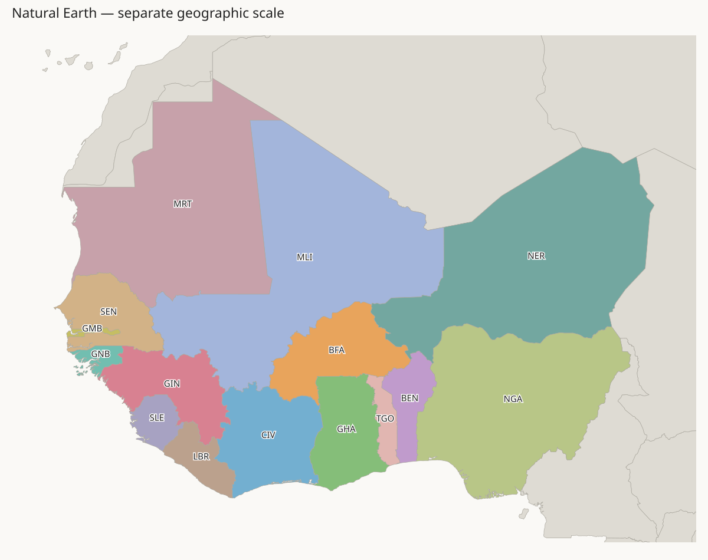

This is a separate experiment. The approved clean layout and H3-MON exports have not changed. Country tile counts and the regional outline are fixed. Colours identify countries; grey countries are outside the trial. Red lines mark shared tile edges between countries that do not share a border in Natural Earth. Missing neighbours appear in the tables, not as red lines. BFA is Burkina Faso; BEN is Benin; TGO is Togo; NER is Niger; NGA is Nigeria.
The African mainland currently has no enclosed empty cells: this trial does not add lakes. Exact trials require all Natural Earth neighbour pairs inside the region, with no extra pairs. Local exchanges and penalized fits can retain wrong contacts. Geographic seeds do not enforce neighbours. The table reports all remaining errors; none of these trials is an approved map. Outside countries stay fixed. Their border errors are shown, not accepted as correct geography. Same-country corner contact counts as connected; country borders require shared edges.
Natural Earth reference · Current world map
Current regional map with border errors
Checks, input hashes, and solver report
| Check | Before | After |
|---|---|---|
| Extra internal neighbours | 10 | 4 |
| Missing internal neighbours | 12 | 7 |
| Extra neighbours, including outside | 18 | 10 |
| Missing neighbours, including outside | 14 | 9 |
| Total country perimeter | 996 | 1188 |
| Burkina Faso perimeter | 74 | 72 |
368 of 3052 regional cells change country. Country budgets remain exact. All countries remain connected under the corner-contact rule.
Remaining false_contacts: BFA–NGA, EGY–NER, EGY–NGA, GHA–NGA, GHA–SEN, MAR–MLI, MAR–MRT, NER–TUN, NGA–SDN, NGA–SEN
Remaining missing_contacts: BEN–BFA, BEN–NER, BFA–CIV, BFA–GHA, BFA–TGO, CIV–MLI, DZA–MRT, GIN–MLI, NER–TCD
Checks, input hashes, and solver report

| Check | Before | After |
|---|---|---|
| Extra internal neighbours | 10 | 10 |
| Missing internal neighbours | 12 | 9 |
| Extra neighbours, including outside | 18 | 16 |
| Missing neighbours, including outside | 14 | 11 |
| Total country perimeter | 996 | 1078 |
| Burkina Faso perimeter | 74 | 68 |
834 of 3052 regional cells change country. Country budgets remain exact. All countries remain connected under the corner-contact rule.
Remaining false_contacts: BEN–GHA, BFA–GIN, BFA–NGA, BFA–SEN, CIV–SLE, EGY–NER, GHA–GIN, GIN–GMB, GMB–GNB, MAR–MLI, MAR–MRT, MLI–NGA, NER–SDN, NER–TUN, NGA–SDN, NGA–TGO
Remaining missing_contacts: BEN–NER, BFA–CIV, BFA–NER, BFA–TGO, CIV–MLI, DZA–MRT, GIN–LBR, GIN–MLI, GNB–SEN, MLI–SEN, NER–TCD
Checks, input hashes, and solver report

| Check | Before | After |
|---|---|---|
| Extra internal neighbours | 10 | 3 |
| Missing internal neighbours | 12 | 2 |
| Extra neighbours, including outside | 18 | 9 |
| Missing neighbours, including outside | 14 | 4 |
| Total country perimeter | 996 | 1226 |
| Burkina Faso perimeter | 74 | 78 |
844 of 3052 regional cells change country. Country budgets remain exact. All countries remain connected under the corner-contact rule.
Remaining false_contacts: BFA–GIN, BFA–SEN, EGY–NER, GMB–GNB, MAR–MLI, MAR–MRT, NER–SDN, NER–TUN, NGA–SDN
Remaining missing_contacts: CIV–MLI, DZA–MRT, GIN–MLI, NER–TCD
Checks, input hashes, and solver report

| Check | Before | After |
|---|---|---|
| Extra internal neighbours | 10 | 10 |
| Missing internal neighbours | 12 | 7 |
| Extra neighbours, including outside | 18 | 16 |
| Missing neighbours, including outside | 14 | 9 |
| Total country perimeter | 996 | 1082 |
| Burkina Faso perimeter | 74 | 64 |
834 of 3052 regional cells change country. Country budgets remain exact. All countries remain connected under the corner-contact rule.
Remaining false_contacts: BEN–GHA, BFA–GIN, BFA–NGA, BFA–SEN, CIV–SLE, EGY–NER, GHA–GIN, GIN–GMB, GMB–GNB, MAR–MLI, MAR–MRT, MLI–NGA, NER–SDN, NER–TUN, NGA–SDN, NGA–TGO
Remaining missing_contacts: BEN–NER, BFA–CIV, BFA–NER, CIV–MLI, DZA–MRT, GIN–LBR, GIN–MLI, GNB–SEN, NER–TCD
